Becoming Friends with My Camera
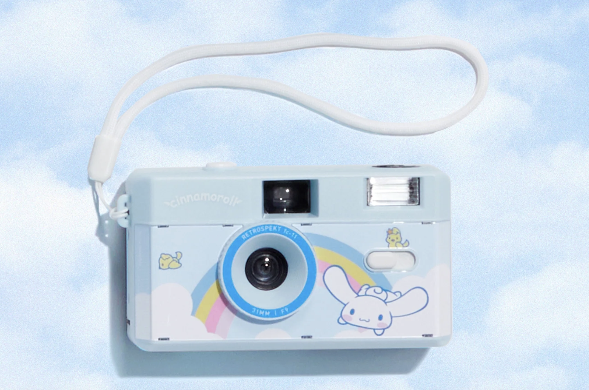
My face is the same size in both photos but looks pretty different. Up close, my nose is a lot nearer to the phone than my ears are, so it comes out bigger than it should. When I step back and zoom in, that difference basically disappears and my face goes back to normal proportions.
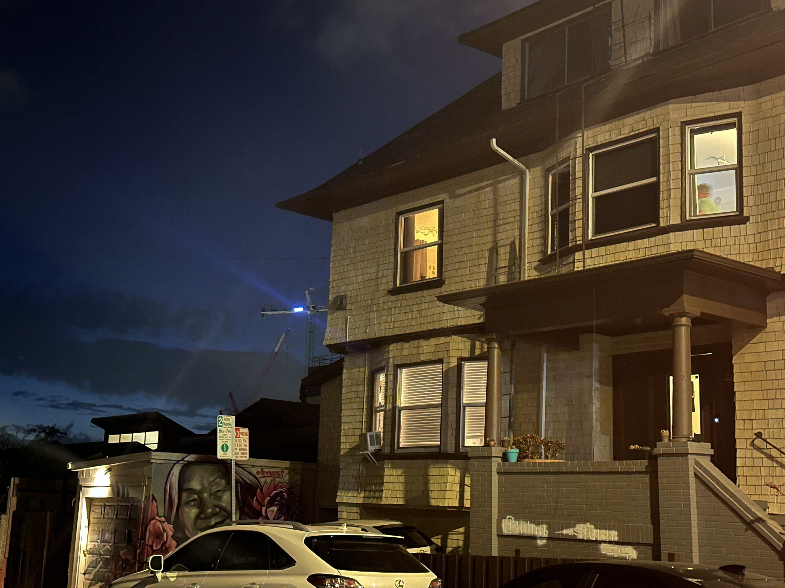
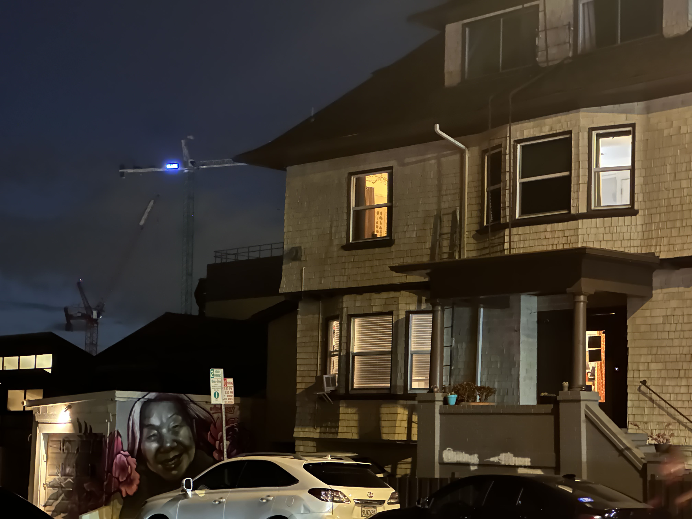
Same idea as Part 1, but backwards. Standing closer at 2x, the house has real depth: the porch and the parked car sit out front, the crane falls way back, and the roof lines angle in. When I back up down the street and go to 3x, the house, the crane and the mural garage all end up looking like they're stacked right on top of each other. The house stays the same size, everything around it doesn't.
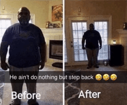
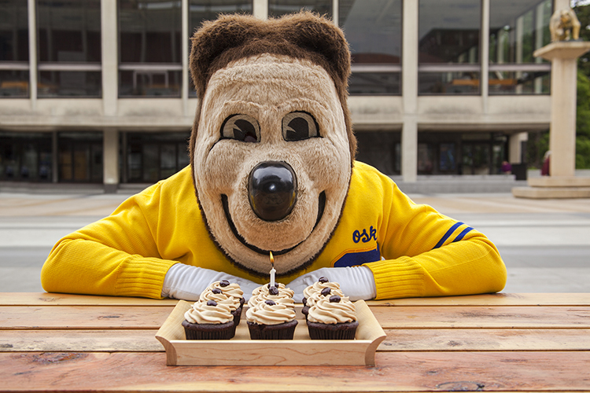
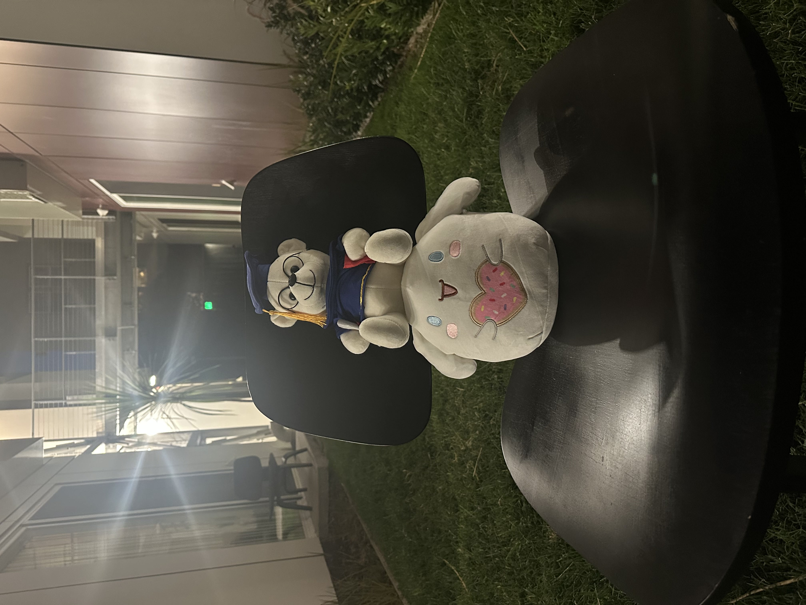
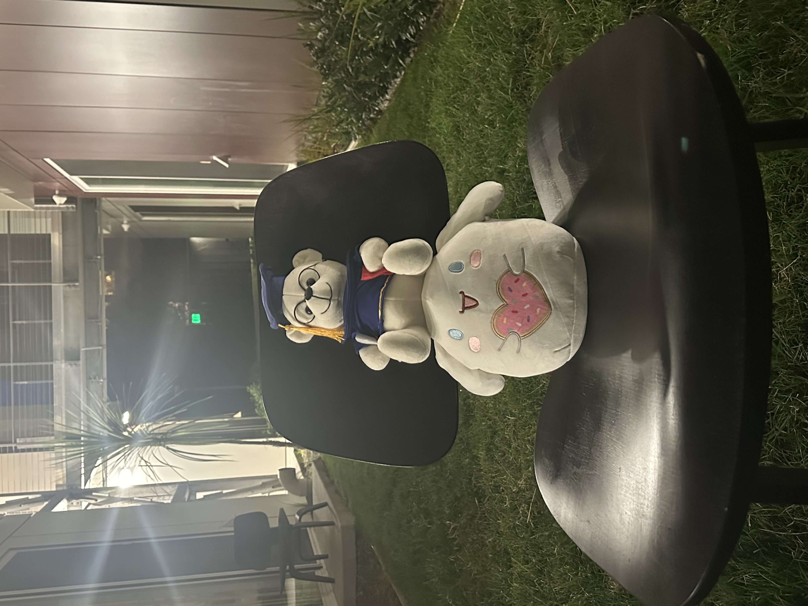
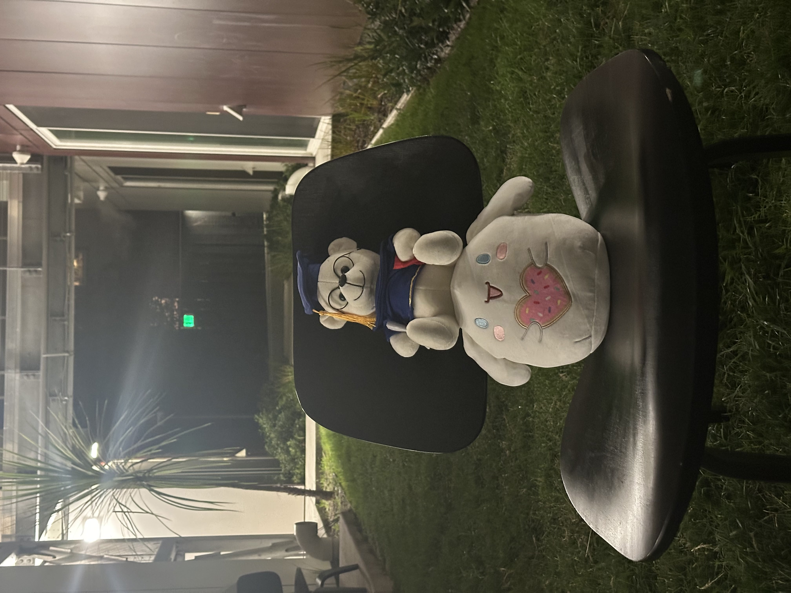
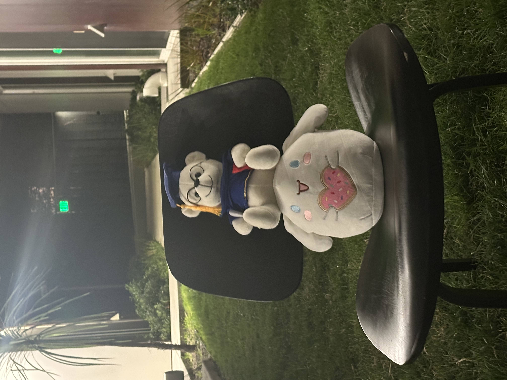
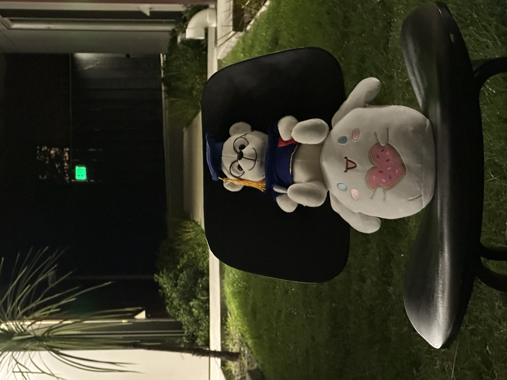
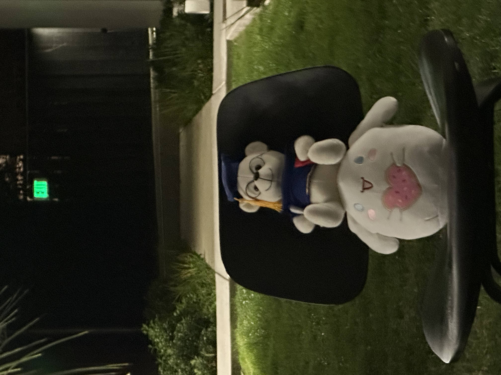
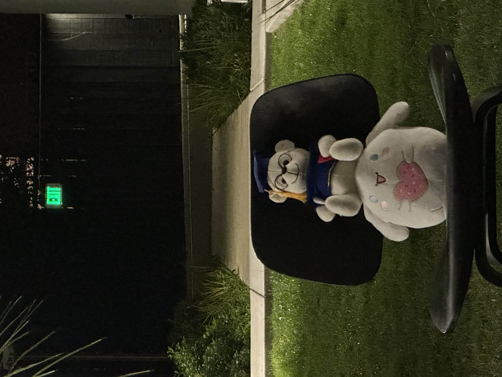
hover the strip to scrub
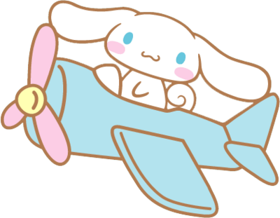
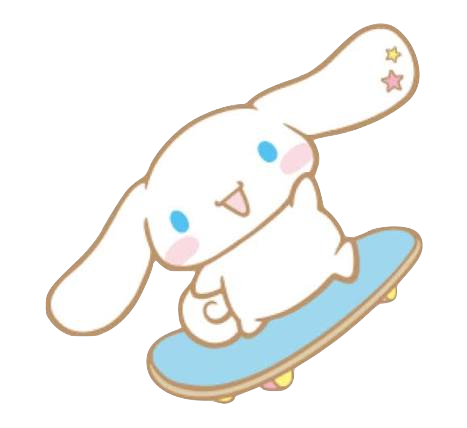
I tried to keep the bear's head the same size in the frame while walking backwards through the courtyard and zooming in. The chair and the plushies barely move, but the path behind them gets shorter, the planters slide in, and the EXIT sign goes from a tiny green dot to actually readable.